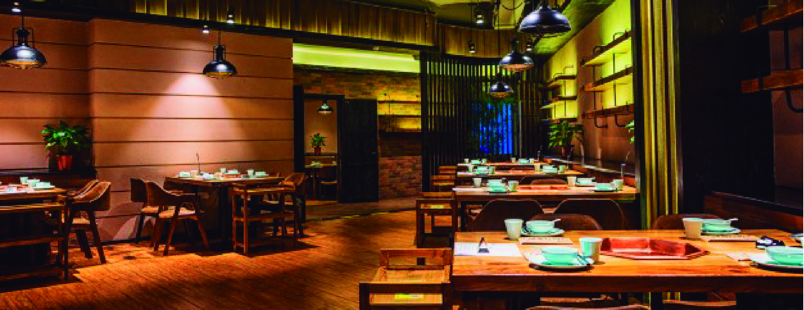
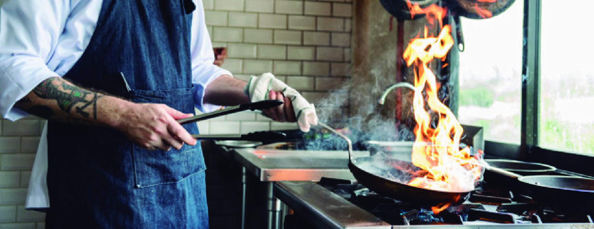

Toggle navigation
HOME
NOSOTROS
BUSCAR RESTAURANTE

Bienvenidos
Food Maps
Inserta tu búsqueda y encuentra tus restaurantes favoritos cerca de dónde te encuentres
Busca tu restaurante favorito
Cafés, Pizzas, Italiano
Inserta tu búsqueda y encuentra tus restaurantes favoritos cerca de dónde te encuentres

Cerca de ti
Restaurantes veganos
Inserta tu búsqueda y encuentra tus restaurantes favoritos cerca de dónde te encuentres
Busca tus restaurantes favoritos en la zona en que te encuentres
Tipo restaurant
Informal
Cócteles
Nocturno
Mexicano
Italiano
Marisquería
Enviar
Restaurantes
Búsquedas
0
+
Restaurantes